Construcción y documentación de latiguillos CAT8 y cable de fibra.
Primero pelamos el cable para empezar a poder hacer el cable.
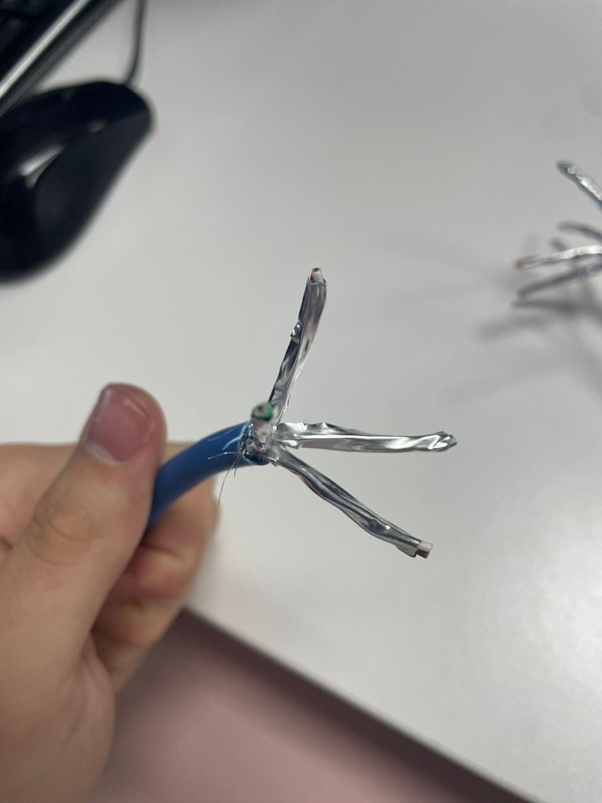
Vemos que los cables están enrollados ya que todos vienen así de forma predeterminada y vemos que están entrelazados entre los mismos colores.
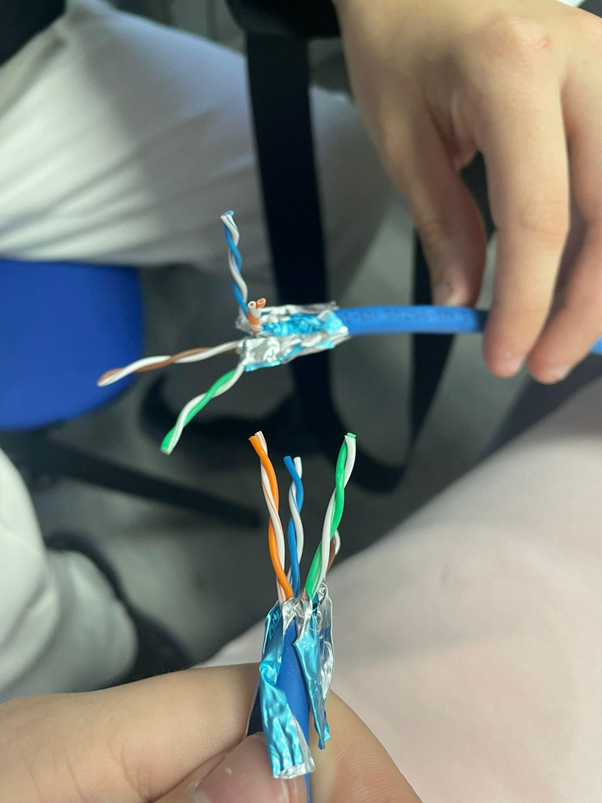
Separamos los cables y los metemos siguiendo el patrón marcado en el cable y lo haremos directo.
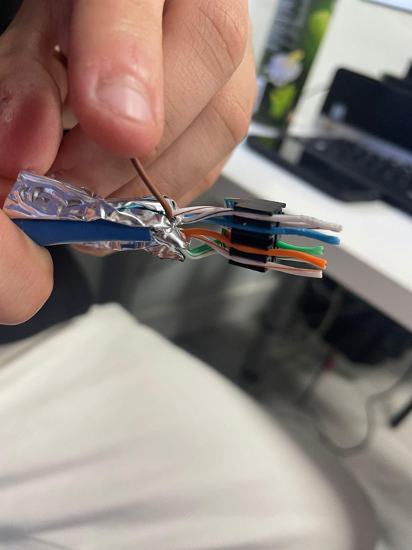
Aquí ya tenemos todos añadidos correctamente y crimpados correctamente para que quede ajustado y bien visualmente.
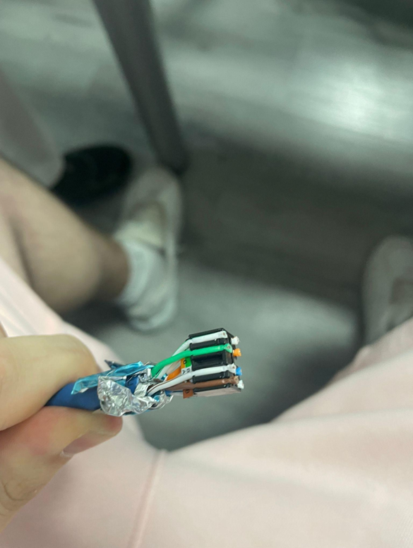
Incluimos lo que nos queda para que funcione correctamente el cable.
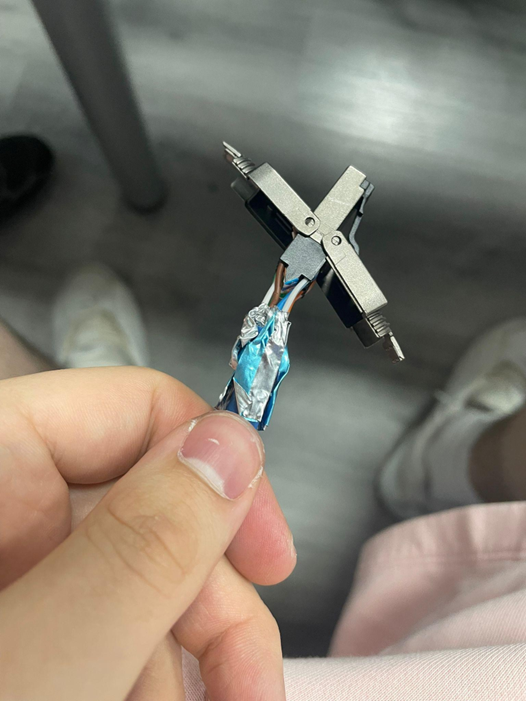
Aquí ya está perfectamente enroscado para que no se caiga y luego al comprobarlo funcione correctamente.
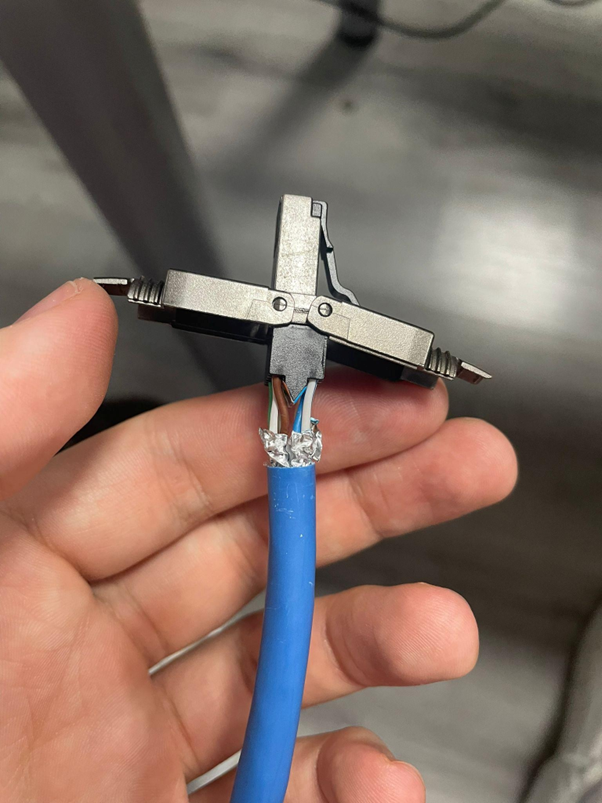
Así quedan los dos cables hechos correctamente.
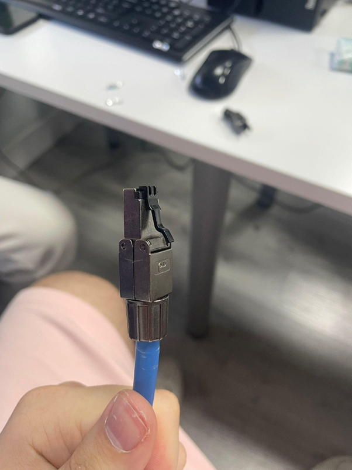
Vídeo de prueba y funcionamiento del cable CAT8.
Vamos a crear un cable de fibra.
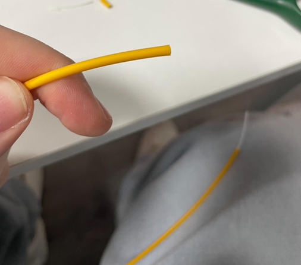
Para empezar deberemos coger el cable de fibra y pelarlo hasta que se quede como en la imagen.
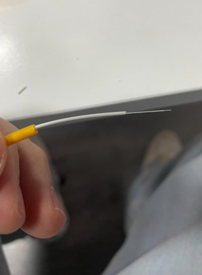
Podemos ver como quedaría el cable bien pulido y limpiado con alcohol.
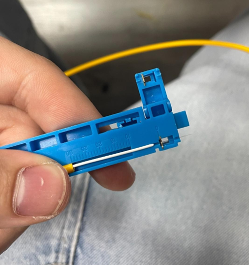
Para el siguiente paso deberemos introducir con mucho cuidado la punta fina.
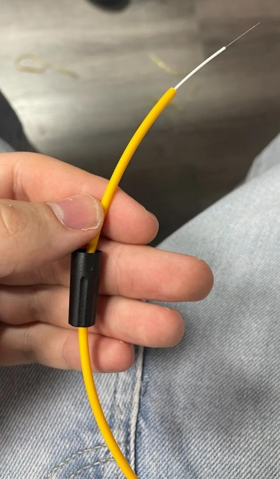
Con las roscas aseguramos el conector y cerramos la pestaña para que quede asegurado.
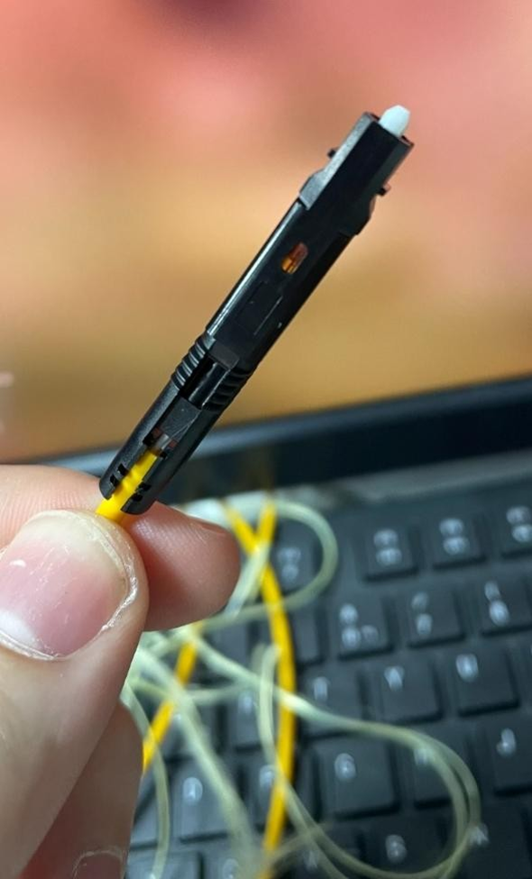
Para el siguiente paso tendremos que meter primero la rosca y luego lo cerraremos.
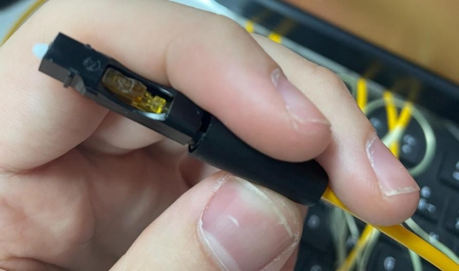
Aquí ya lo tendríamos con la rosca bien puesta y cerrado.
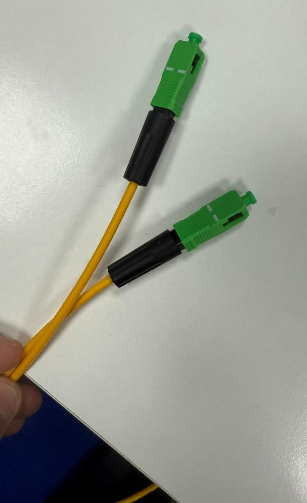
Vídeo de prueba y funcionamiento del cable de fibra.